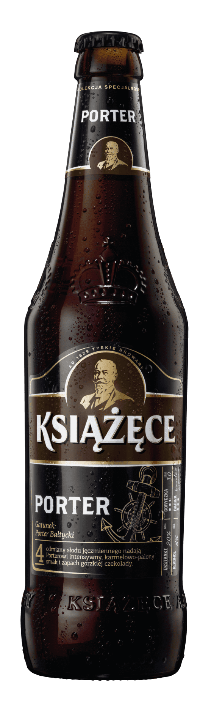

Książęce Porter

Z biegiem czasu Porter dojrzewa. Początkowo wyczujesz karmel, kawę, gorzką czekoladę, orzechy z nutami wiśni i porzeczek. Z czasem smak łagodnieje i wzbogaca się o nuty wina i suszonych owoców. Najlepiej smakuje w temperaturze 10-12°C. Podkreśli smak pieczonych mięs, dojrzałych serów, ale też deserów na bazie kawy i czekolady. Gdy Napoleon wprowadził blokadę angielskich towarów - w Europie zabrakło piwa. Na szczęście w Europie Wschodniej udało się stworzyć mocne, rozgrzewające piwo - tak powstał Porter Bałtycki.

8%

20% wag
Aby zeskanować kolejny produkt, naciśnij przycisk